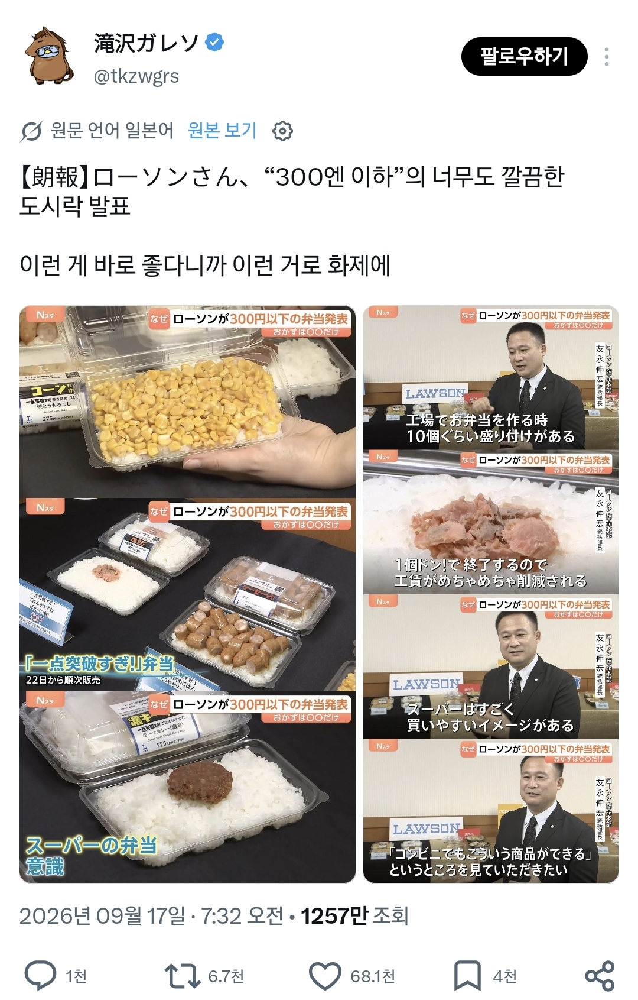
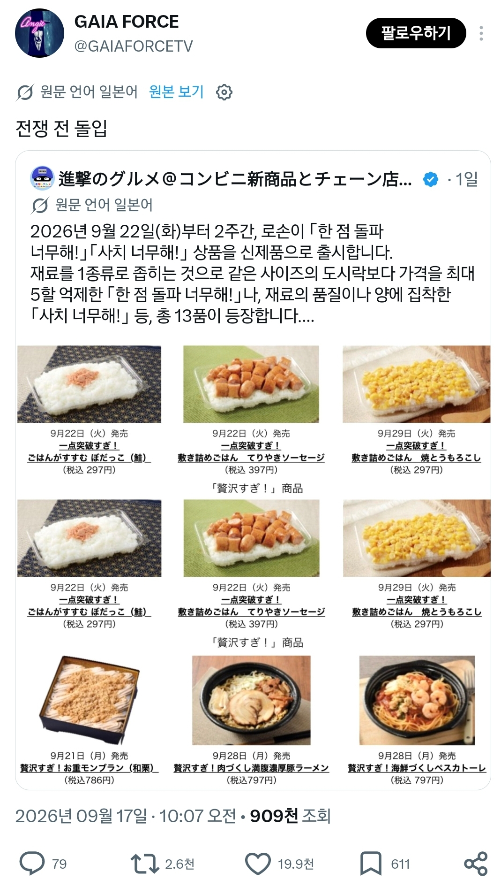
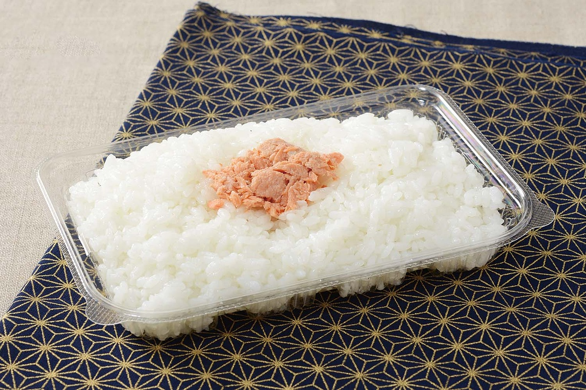
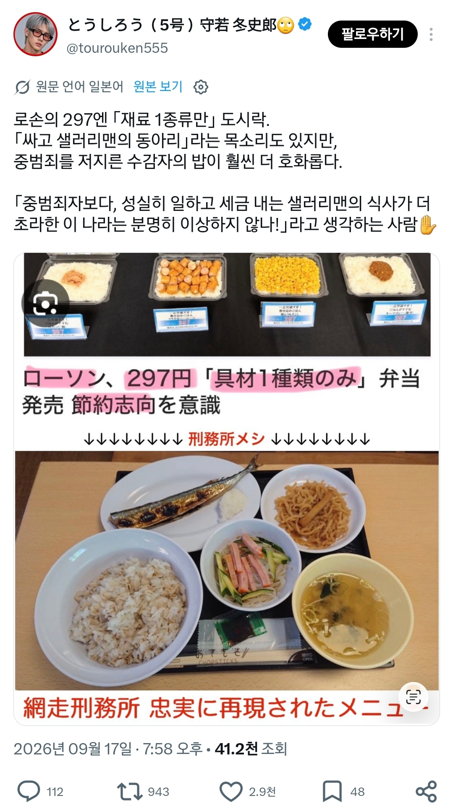
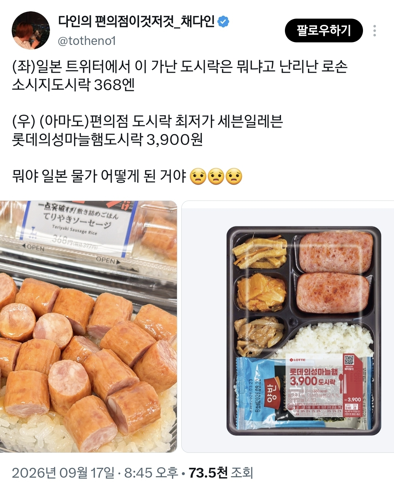

https://cafe.daum.net/subdued20club/ReHf/5742054?svc=cafeapi



흰 쌀밥+연어절임 조합의 도시락이 297엔=2600원
그밖에도 소세지만 올라간 도시락=3600원,
옥수수만 올라간 도시락=2600원이 있음


일본 편의점 음식들이 심하게 너프당함
https://cafe.daum.net/subdued20club/ReHf/5742054?svc=cafeapi



흰 쌀밥+연어절임 조합의 도시락이 297엔=2600원
그밖에도 소세지만 올라간 도시락=3600원,
옥수수만 올라간 도시락=2600원이 있음


일본 편의점 음식들이 심하게 너프당함
확실히 15년 전 쯤 일본은 대단해보였는데 이제는 우리나라가 많이 올라온듯
와 뭐냐 일본편의점 도시락 보고 겁나부러워했엇는데
빵종류는 아직 일본이 낫다고 본다
일본 편의점 병신 다되긴함
푸딩이나 빵만 남음
도시락 퀄리티로 경쟁하니까 수준들이 확 올라옴
옛날 도시락들은 질 많이 떨어졌는데
공장 유튜브영상보면 졸라깨끗함 다 직접만들고
심지어 368엔도 아님 부가세 붙이면 최종금액은 397엔이래
저런거는 놀러갔을때 먹어보지도 못했는데 어디서 파는걸까..
로손이나 세븐에서는 일단 못봄
로손에서 팔고 얼마전부터 팔기 시작해서 1~2주 안에 간거 아니면 못 볼만함.
요새 편의점에서 빨리먹고 헬스장가는데 도시락 퀄 진짜 다 좋더라
로손도시락 진짜많이먹엇엇는데
그래도 디저트는 일본 편의점 차원 다르다던데
전쟁전돌입 ㅋㅋㅋㅋㅋㅋㅋㅋㅋㅋㅋ
난 각각도시락 정점은
세븐 대왕돈까스도시락
gs 왕만두국
cu 12찬?이였나 반찬많은거
ㅈㄴ게먹었다 정말
요새 편의점 도시락 ㄹㅇ 괜찮아서 먹을거 없으면 편의점 도시락에 컵라면 작은거 하나면 딱이긴 하드라
빵류랑 오뎅 컵라면은 일본승
일본 가보면 저렴한 라인은 한없이 박살나고 비싼 라인도 비싸니까 이정도 나오는거지 라는 느낌.
가성비라는게 없고 그냥 비싼것과 더 비싼것 밖에 없음.
그나마 디저트랑 빵이 한국보다 맛있고 종류가 많다 정도.
예전에는 일본 놀러가면 편의점 도시락 같은것도 종종 사먹었었는데 최근에는 한번도 안사먹었었네.
이젠 일븀 여행가면 편의점에서 이젠 감자샐러드에 효케츠 두개랑 과자하나서 먹는게 제일 낫더라 ㅋㅋㅋ